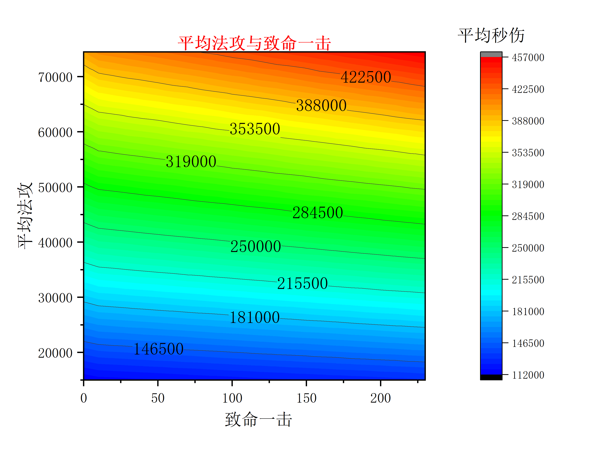
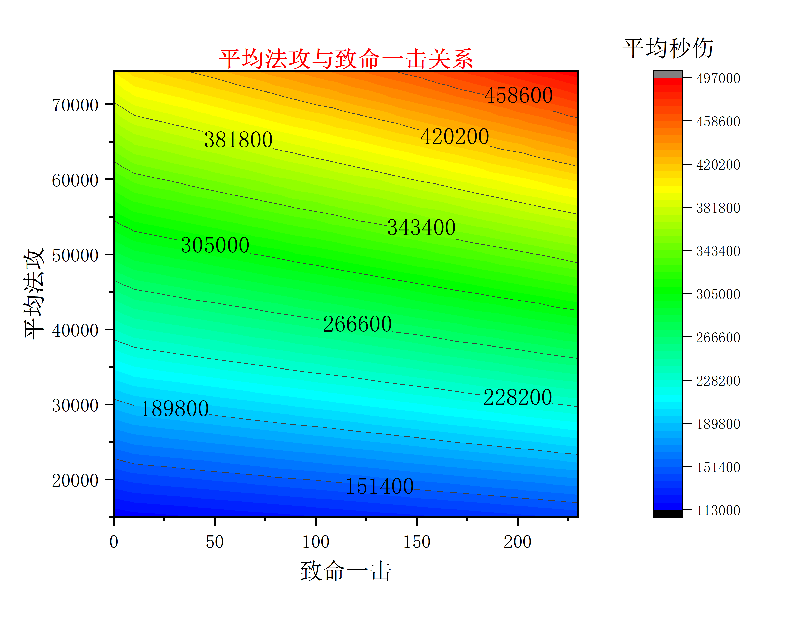
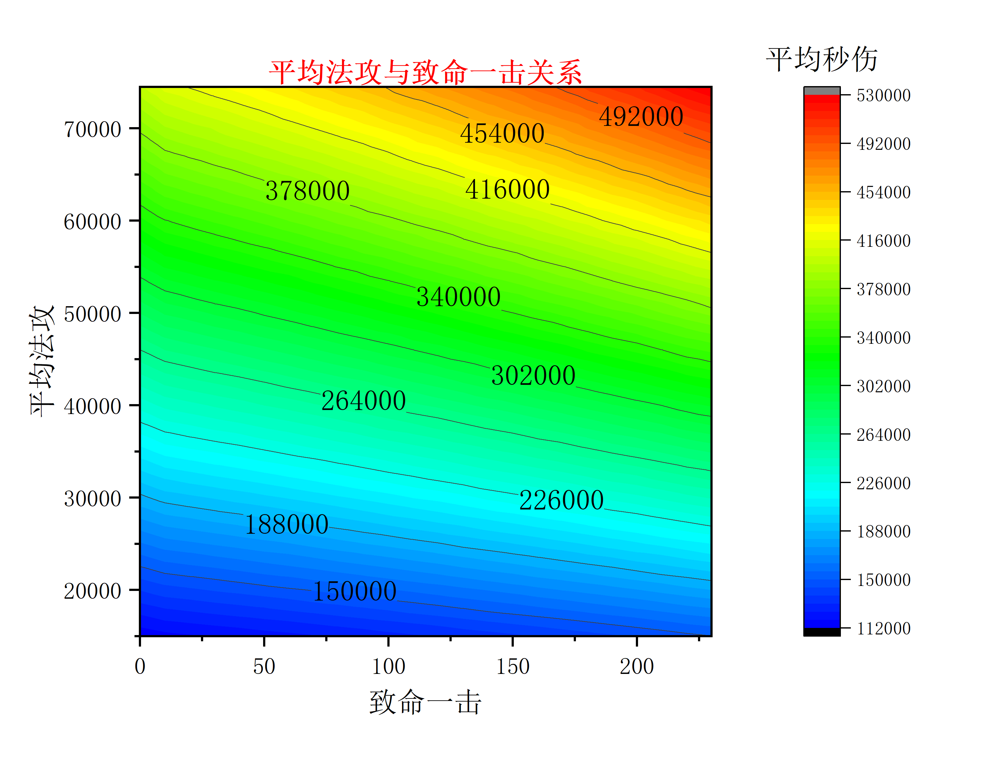
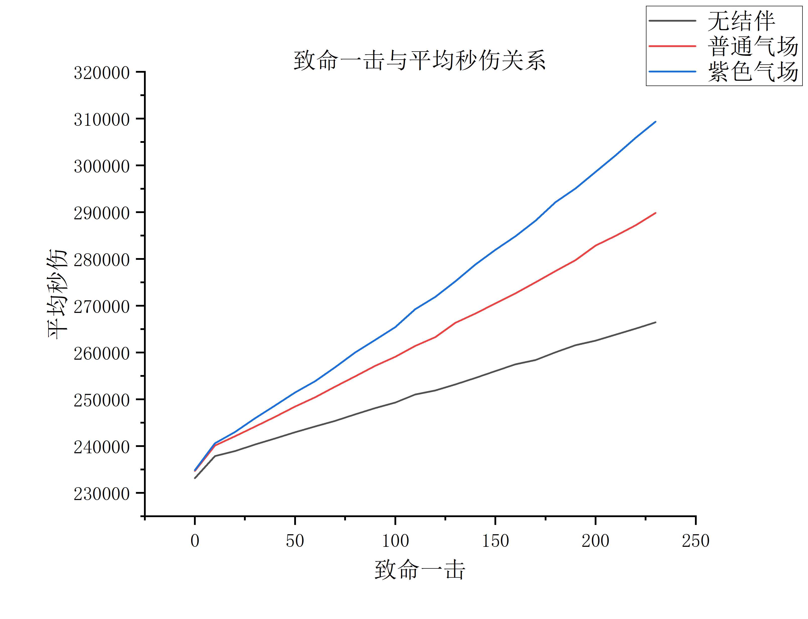

PVE下致命对异人的伤害收益
作者：[德库拉]
我们知道提高致命对伤害的提升有显著的效果，可是到了异人这个职业，却颇有争议。主要原因是无结伴的情况下异人的鬼灵不继承人物的致命，而结伴傲苍生点满30级普通气场也只能继承人物30%致命，紫色气场才能继承人物50%致命。
从字面上看确实很低，而且异人并没有包含提升自身致命的技能，所以提升致命非常困难，最终致命路线变成氪金大佬的专属，所以很有必要探索下致命对异人的影响。
核心技能
老规矩，先梳洗下异人几个核心技能的伤害计算公式，为了快速奔向主题，我会直接跳过推理过程，直接展示公式，如果有问题，请不吝指出。
骨灵
最小攻击
骨灵最小攻击= 人物面板最小攻击 * 0.5 + 骨灵技能等级*78
最大攻击
骨灵最大攻击= 人物面板最大攻击 * 0.5 + 骨灵技能等级*120
60级天赋散魄赋可以使骨灵对怪物造成的伤害增加30%
石灵
最小攻击
石灵最小攻击= 人物面板最小攻击 * 0.5 + 石灵技能等级*96
最大攻击
石灵最大攻击= 人物面板最大攻击 * 0.5 + 石灵技能等级*162
催山裂石
催山裂石下的鬼灵面板攻击=鬼灵面板攻击 * 1.12
血饲
血饲后的鬼灵面板攻击=鬼灵面板攻击 * 1.25
因为后面我准备用全技能40级来模拟，所以这里血饲的加成是25%
碧血诀
碧血诀伤害= 人物面板随机攻击+技能描述法术伤害
山灵知我意
山灵知我意面板= 鬼灵面板攻击 * 1.18
假设30级秘术
Tip
注意：山灵知我意,血饲,催山裂石技能叠加时，计算是用连续的乘法，也就是 鬼灵面板×催山裂石尘×血祠×山灵知我意
模拟实际场景
鬼灵属性
- 致命一击 39 (天生)
- 致命伤 50% (天生)
人物属性
- 攻速
1.43 - 致命一击：0-230
- 致命伤：(致命一击 / (230.0 / 75.0)) + 50
因为致命一击是确定的，致命伤却不固定，有的人可能200致命一击，但是致命伤已经到125%。因此这里我假设 230致命一击时，致命伤恰到达到125%，这样子的好处就是我可以直接通过致命一击估算致命伤。
- 攻速
天赋
散魄赋+催山裂石
技能
骨灵+木灵+碧血诀 （全部40级）,这里不选择
冥凤临世是因为它的攻击会随着时间衰减不好模拟，因此实际伤害会比我呈现的高一些。但是这不影响我们对致命对伤害增长趋势观察。怪物属性
单只怪物
0防御，0躲避也就是每次必中，不用罗衫渐阔破防，方便测试时长
五分钟
打印出模拟的结果
0.00s: 开始血饲
0.00s: 骨灵1 42375 骨灵2 38541 石灵1 38432 石灵2 18544
0.70s: 碧血诀 73326
1.00s: 骨灵1 45436 骨灵2 79273 石灵1 33788 石灵2 23892
1.40s: 碧血诀 42453
2.00s: 骨灵1 37205 骨灵2 43454 石灵1 18990 石灵2 33627
2.10s: 碧血诀 36574
2.80s: 碧血诀 42400
3.00s: 骨灵1 44140 骨灵2 45880 石灵1 28593 石灵2 22620
3.50s: 碧血诀 91692
4.00s: 骨灵1 30953 骨灵2 51437 石灵1 23342 石灵2 25973
4.20s: 碧血诀 41084
4.90s: 碧血诀 81140
5.00s: 骨灵1 39062 骨灵2 42623 石灵1 33411 石灵2 30647
5.60s: 碧血诀 33237
6.00s: 骨灵1 35066 骨灵2 48664 石灵1 32448 石灵2 28892
6.30s: 碧血诀 88716
7.00s: 碧血诀 46149
7.00s: 骨灵1 32638 骨灵2 41098 石灵1 20211 石灵2 30305
7.70s: 碧血诀 28748
8.00s: 骨灵1 42632 骨灵2 38437 石灵1 23844 石灵2 25310
8.40s: 碧血诀 80146
9.00s: 骨灵1 29774 骨灵2 74314 石灵1 23402 石灵2 29518
9.10s: 碧血诀 41727
9.80s: 碧血诀 36055
10.00s: 骨灵1 46385 骨灵2 55657 石灵1 31338 石灵2 34018
10.50s: 碧血诀 65228
11.00s: 骨灵1 45304 骨灵2 34558 石灵1 24670 石灵2 19827
11.20s: 碧血诀 33890
11.90s: 碧血诀 39981
12.00s: 骨灵1 52853 骨灵2 44993 石灵1 28600 石灵2 25221
12.60s: 碧血诀 37369
13.00s: 骨灵1 34901 骨灵2 43852 石灵1 25453 石灵2 27669
13.30s: 碧血诀 30532
14.00s: 碧血诀 82824
14.00s: 骨灵1 49004 骨灵2 45464 石灵1 19809 石灵2 27803
14.70s: 碧血诀 40523
15.00s: 骨灵1 45400 骨灵2 30475 石灵1 33484 石灵2 26461
15.40s: 碧血诀 34641
16.00s: 骨灵1 41297 骨灵2 45394 石灵1 34217 石灵2 23459
16.10s: 碧血诀 39511
16.80s: 碧血诀 39840
17.00s: 骨灵1 73111 骨灵2 41889 石灵1 33891 石灵2 25897
.....................
293.30s: 碧血诀 36677
294.00s: 碧血诀 39503
294.00s: 骨灵1 34618 骨灵2 68572 石灵1 40046 石灵2 25888
294.70s: 碧血诀 91032
295.00s: 骨灵1 51392 骨灵2 28232 石灵1 34559 石灵2 23925
295.40s: 碧血诀 91512
296.00s: 骨灵1 46216 骨灵2 42514 石灵1 21461 石灵2 30279
296.10s: 碧血诀 79888
296.80s: 碧血诀 45304
297.00s: 骨灵1 37519 骨灵2 41948 石灵1 24333 石灵2 52161
297.50s: 碧血诀 31174
298.00s: 骨灵1 32324 骨灵2 53145 石灵1 25560 石灵2 30768
298.20s: 碧血诀 54834
298.90s: 碧血诀 67976
299.00s: 骨灵1 48049 骨灵2 39380 石灵1 43994 石灵2 29677
299.60s: 碧血诀 92496
总伤害:62549430
平均秒伤:208498
鬼灵的攻击频率是1秒1次，人物0.7秒释放一次碧血诀，血饲有空挡就放，所以上面的释放符合预期，接下来就开始收集数据分析
无结伴1.43攻速下致命和异人平均攻击的关系

普通气场1.43攻速下致命和异人平均攻击的关系

紫色气场1.43攻速下致命和异人平均攻击的关系

为了更直观看出三者的差异，我们挑选平均法攻为4万来放在一起对比

结论
PVE场景下致命一击和结伴对异人的伤害提升明显